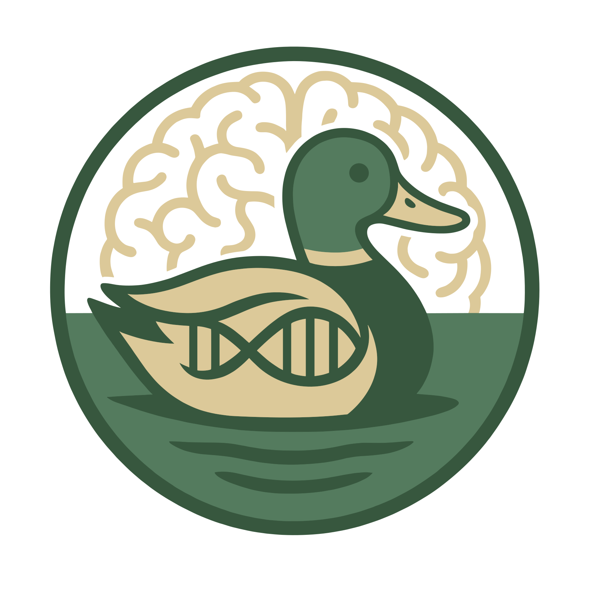

The Mallard Lab — Who We Are
We are a small, collaborative group of researchers working at the intersection of statistical genetics, psychiatric genomics, and computational neuroscience at Massachusetts General Hospital & Harvard Medical School.
Principal Investigator
Assistant Professor of Psychology, Department of Psychiatry, Harvard Medical School
Assistant Investigator in Psychiatry, Massachusetts General Hospital
Travis Mallard is a psychiatric and statistical geneticist whose research centers on the genetic architecture of psychopathology, with a particular focus on externalizing disorders, behavioral disinhibition, psychiatric comorbidity, and heterogeneity. His work integrates large-scale genome-wide association studies, multivariate genomic modeling, and neurogenomic annotation to map shared and disorder-specific liabilities across the spectrum of mental illness.
Travis received his BS in Psychology from George Mason University and his PhD in Clinical Psychology from the University of Texas at Austin, where he trained under Kathryn Paige Harden. During his doctoral training he held visiting scholarships in statistical genetics at Vrije Universiteit Amsterdam (with Philipp Koellinger) and in neurogenomics at the NIMH Intramural Research Program (with Armin Raznahan). He completed his clinical internship at the Veterans Affairs Maryland Health Care System and the University of Maryland School of Medicine.
He joined Massachusetts General Hospital and Harvard Medical School as a NHGRI T32 Postdoctoral Fellow in Precision & Genomic Medicine under Jordan Smoller, and was appointed to the faculty in 2024, with promotion to Assistant Professor in 2025. He is a core member of the Externalizing Consortium, PsycheMERGE Network, and Psychiatric Genomics Consortium Cross-Disorder Working Group.
His current work is supported by a NIMH K08 Mentored Career Development Award and a Brain & Behavior Research Foundation Young Investigator Award.
Lab Members

Postdoctoral Fellow
PhD, Yale University
[Brief bio describing research interests, background, and current project in the lab. 2–3 sentences.]
Postdoctoral Fellow
PhD, University of Toronto
[Brief bio describing research interests, background, and current project in the lab. 2–3 sentences.]
Data Analyst
BA, Amherst College
[Brief bio describing research interests, background, and current project in the lab. 2–3 sentences.]
Alumni
Postdoctoral Fellow
[Name]
[Year]–[Year]
[PhD, Institution]
[Brief description of what they worked on in the lab. 1–2 sentences.]
Graduate Student
[Name]
[Year]–[Year]
[Degree Program, Institution]
[Brief description of what they worked on in the lab. 1–2 sentences.]
Research Assistant
[Name]
[Year]–[Year]
[Degree, Institution]
[Brief description of what they worked on in the lab. 1–2 sentences.]
Join Us
We welcome inquiries from prospective postbaccalaureate and postdoctoral trainees with interests in statistical genetics, bioinformatics, or computational neuroscience.
Get in Touch